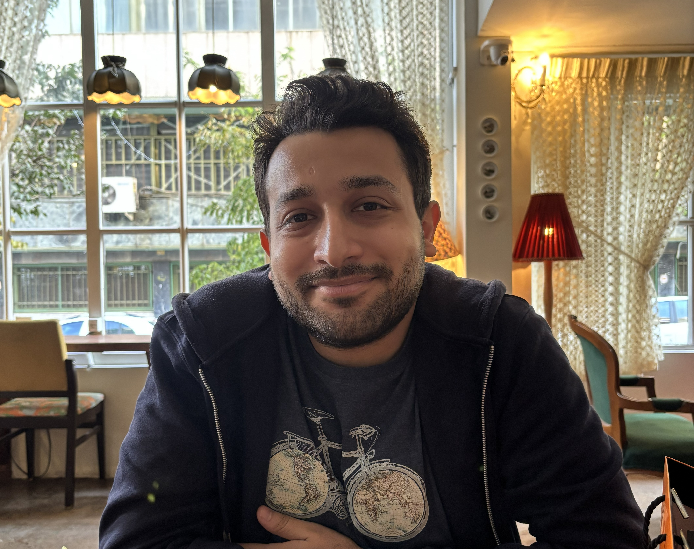
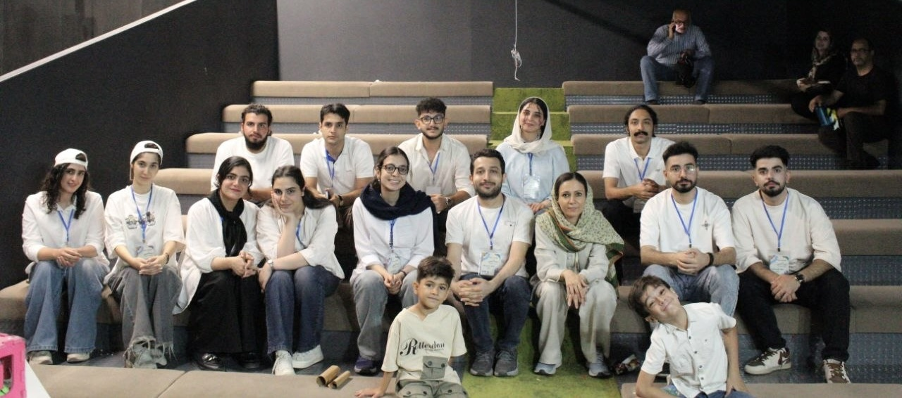

Shakib Hosseinzadeh
Machine Learning Researcher
I'm a machine learning researcher, still early in my career. Most of my work is self-supervised learning for medical images, mainly histopathology, and I have been using diffusion models for it. I also enjoy competitions. Lately I have been curious about brain data, especially how well a model trained on a few people's brain recordings works for a new person. I'm open to new research directions, collaborations and roles, so feel free to get in touch.
Education
Amirkabir University of Technology, Tehran Polytechnic · GPA 4.0
Thesis Self-Supervised Contrastive Conditioning for Latent Diffusion-Based Histopathology Segmentation
Contrastive pretraining, then latent diffusion conditioning, then segmentation fine-tuning. On MoNuSeg: AJI 0.6569 and F1 0.8005, above several supervised baselines.
University of Science and Technology of Mazandaran · Department record: highest CGPA in ten years
Thesis Improving the Detection of Very Small Objects in Images
Designed a network that keeps fine spatial detail through high-to-low-dimensional projections. +12% recall on extremely small objects.
Research
Borrow, then personalize
Predicting a new person's EEG and fMRI responses to images from a few hundred labels. Encoders learned from other people are averaged, then a small linear map fitted on the new person's own labels corrects that average. The paper tests this on lab EEG, consumer EEG, 7-tesla fMRI and single-trial 3-tesla fMRI. Preprint forthcoming.
Medical image captioning
BLIP-2 with an OPT-6.7B language model, fine-tuned on the ROCOv2 radiology dataset. Parameter-efficient fine-tuning (PEFT) made the adaptation fit on a single GPU. For research and learning only, not for clinical use.
Object detection on satellite imagery
A comparison of YOLOv5, YOLOv7, YOLOv8 and YOLOv9, plus several architecture variants, on 272 annotated satellite images of airliners, vehicles and boats, built with Ultralytics.
Experience
Teaching Assistant
Teaching Assistant
Machine Learning, Computational Data Mining
Teaching Assistant
Numerical Linear Algebra, Linear Optimization, Data Structures
Volunteering
Instructor
Edge-friendly vision models: CLIP encoders, lightweight diffusion, pruning, quantization and distillation.
Technical operations
Managed infrastructure, equipment and session scheduling.
Turning Math into Games at Ribazi

Awards and competitions
Seven heterogeneous tasks, including dental segmentation on noisy imagery, zero-shot anomaly detection and composed image retrieval, under strict VRAM and latency limits.
Noise-robust dual-stream model using Mel-spectrograms and raw-waveform transformer latents.
Skills
- Programming
- Python, C/C++, MATLAB/Octave, Bash
- ML frameworks
- PyTorch, TensorFlow, Keras, JAX, scikit-learn, OpenCV, Diffusers, Hugging Face
- Data and tools
- NumPy, Pandas, Matplotlib, Git, Docker, Kaggle, n8n
- Focus areas
- Computer vision, medical imaging, self-supervised learning, computational neuroscience, remote sensing, VLMs, LLMs